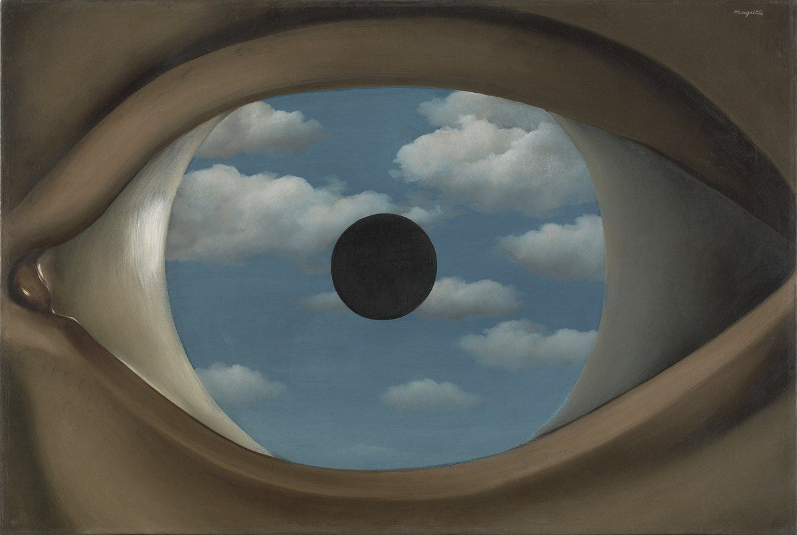

The Hard Problem of Consciousness (Don't They Make Pills for That?)
Thoughts on Thoughts on Thoughts on Thoughts on...
Dec 15, 2024
The Darkness That Comes Before
“I shall never tire of underlining a concise little fact which these superstitious people are loath to admit—namely, that a thought comes when “it” wants, not when “I” want.”
-Friedrich Nietzsche
I recently finished reading R. Scott Bakker’s book series The Prince of Nothing along with several of his essays that deal more directly with some of the themes presented in the novels. The series, along with his essays, seems to focus on two major ideas: 'The Darkness That Comes Before' and 'semantic apocalypse’. Neither of these ideas is new, but Bakker is able to breathe life into these topics by giving them a fresh paint job and placing them into a modern rationalist and scientific framework. Although not novel, Bakker is an interesting and infectious writer that has made me rethink my philosophy of mind and many of the beliefs that I haven’t updated since moving beyond my annoying edgy nihilistic teenage atheist phase. The quote above by Nietzsche, which also prefaces the beginning of his first book, touches on one of the central tenets in Bakker’s philosophy and one that was immensely important to me back in my mid-to-late teenage years. This idea that thoughts come when they see fit and not when the I seems fit is something Bakker calls, “the darkness that comes before” and has been a staple in arguments against free will since the early days of Buddhism. “The Darkness that comes before” is really just a cute new way of describing the impenetrable veil/void that separates us from our own minds as well as the minds of others. At first, this may seem unintuitive since the mind is the only thing we have direct access to in this world but as Nietzsche points out above and as the Buddhists (particularly the Zen Buddhists) have been saying for a thousand years we are not the cause of our own thoughts and thus any attempt to investigate the mind is paradoxically blocked by the very thing we are attempting to search for. Any thoughts or ideas we generate about the mind stem from the mind itself tainting any objective peek we’d like to make into our own mental landscape. It’s a lot like trying to measure a ruler with the same ruler you want to measure or investigating a murder when you can only ask the prime suspect questions and any conclusions you draw from his answers must be run by him first for approval. This is great if the suspect is an innocent and honest man, but if the mind is a killer then, well…
Semantic Apocalypse
‘Semantic Apocalypse’ is the primary overarching theme in Bakker’s writing and one which follows as a direct consequence of ‘the darkness that comes before’-the belief that man has no influence or participation in his own thought. The implication of this darkness is clear: if I am not in control of my own thoughts, and if my actions are determined by thoughts that I am not in control of then I have no free will. If I have no free will then what is it that I call an ‘I’ since there is no evidence of this I’s influence or existence anywhere in the world or in myself. This idea is a sort of semantic apocalypse in and of itself and the term ‘semantic apocalypse’ is really just a modern update of Nietzsche’s conception of the ‘death of God’. The concept of semantic apocalypse can also be thought of as a very specific kind of information hazard that not only psychically damages the individual but damages/destroys the existence of meaning itself. For Bakker ideas like the darkness that comes before and the results of its widespread acceptance along with a more fully developed understanding of the mind/brain will obliterate the belief of free will along with the concept of identity which will lead to a collapse of the foundations of our society and the structures through which human beings have derived purpose and fulfillment since the beginning of time. In this post-apocalyptic wasteland ideals like hard work could no longer be seen as virtues since according to the true believers of determinism things like will or work ethic are all predetermined by neural pathways, brain chemistry, and genetics. There is no longer room for growth, greatness, or appreciation there is only that which was always destined to be, there are only the strings of fate. If determinism is true and the myth of free will is cast out from the minds of men then what were once simple and logical solutions to problems are now thrown into question and a new Pandora’s box of moral complications is opened. What does it mean for a child to be lazy under this new enlightened framework? How do we reprimand a lazy child who refuses to do his homework since we can now no longer believe that he is purposefully or willfully misbehaving but is instead following directions from a higher authority than any parent could hope to be? Should a killer feel remorse for his crimes? Isn’t he the real victim here since he was the one cursed with a set of genetics that make him an asocial killer? It’s easy to think of ways in which this worldview could drastically change, alter, and possibly destroy our world but the question still needs to be asked if this future apocalypse is inevitable and if the self and free will really are just outdated concepts that science will almost certainly crush. So, is God truly dead, and more importantly did video really kill the radio star?
The Case For Determinism
The case for determinism I find most compelling and the one that originally persuaded me as a teenager to adopt the worldview is more or less the same idea as the darkness that comes before. Arguments that rely on a completely deterministic worldview seem to hold up less and less in the face of quantum mechanics despite how ‘woo woo’ it sounds. Famous computer scientist John Conway even coauthored a paper that uses our current understanding of quantum mechanics to prove the existence of free will. I find the argument presented in this paper and other arguments following the same logic unpersuasive since it seems to boil down to an argument of libertarian choice and the possibility of randomness existing within a system which I find unconvincing since the man who makes his decisions based on the results of a random number generator seems to be outsourcing his will just as much as any man who is controlled by his biology. It was concerning how few arguments I could find that adequately addressed or even acknowledged the problems raised by the darkness that comes before and the problem of self-generation in thought. Just because multiple choices could be taken and one of an equally likely number of possible actions must be taken any decision used to arrive at the action is one dictated by the darkness since any consciously decided upon act was made due to the thoughts stemming from a source that was not willed or controllable. The simplicity and elegance of the argument are incredibly persuasive and I can understand even now why I was drawn to the idea despite disagreeing with it today since it is a difficult claim to refute without introducing souls or the supernatural which is almost immediately and understandably dismissed by those who are either agnostic or atheist. To summarize the argument quickly if it was not made clear above the basic premise is that thoughts and their contents arise seemingly randomly and from a void that we have no control over and any thought you wish to think to demonstrate your autonomy itself originated from a place that you did not consciously will. “I will think of purple bananas to prove that I can generate a thought willfully”. “How did you arrive at the thought of purple bananas? Wasn’t this also given to you by the darkness?” “Where did that thought about questioning where that thought came from come from?” “Where did…” etc. The rabbit hole and infinite regress never end. Without the seemingly impossible task of generating a rabbit or self out of an infinite regress or a base case of a free autonomous self, the argument seems to be difficult or even impossible to counter. Despite the seemingly impossible task put forth by determinism… abracadabra
Free Will
Since most of the typical arguments for free will do not address the problem of origin in thought what follows is an atypical long meandering and hopefully (or maybe unfortunately) novel argument that attempts to lead to a position of at least uncertainty and agnosticism when it comes to the question of free will.
The immediate naive response to the darkness that comes before would be to simply identify the I with the biological and neurological processes that lead to thoughts. “I have free will because I am not separate from my body and the brain that generates these thoughts.” The problem with this is that I or self implies a kind of singularity or unity that does not seem to exist in the brain or body. Most are aware of the split-brain experiments where patients who were prone to constant seizures had their corpus callosum cut as part of a way to relieve these violent physical attacks. One of the results of undergoing this procedure is that it seemed to also split the consciousness of the patient. This split was not severe or life-threatening but you could do odd things with the patients like display an image in one eye and then ask the patient to draw the image with the opposite hand. The patient would often draw the same object present in the image but claim to have not consciously seen the image and when asked to explain why they drew the particular image which coincidentally matched the image displayed the subject would often claim that it was just luck and come up with a justification for why they drew what they did by saying something like “I saw a bird when I drove here today”. But this idea of a split consciousness is not entirely new or at least the idea that there are parts of the brain or mind that the “I” is unaware of in fact this was the very basis of psychology. These questions of a fractured self have been present for a while in fact Buddhism particularly Zen Buddhism is essentially an entire religion that is nothing but a theory/theology of mind that plays with this idea and reaches the conclusions that many like R Scott Bakker, Sam Harris, and Daniel Dennett now seem to agree upon which is that there is not self and thus no free will since there is not even an I to act on such freedom if it was possible at all.
Since the term self or I must describe something that is singular the problem of free will must at least begin with establishing a self or an I because there must be something to be free if freedom is to be established. Now since the I cannot be tied to any one individual neural process and since for many when they say “I” what they mean is the thing that experience it is best to define the I if one is to exist at all as that feeling of what it is like to experience. So for now to at least make room for the I, the self must be relegated to that of a homunculus or impotent observer chained in front of the TV that watches the events in consciousness take place and listens over the radio for thoughts to float into earshot. If there is to be an I or a continually persistent “thing” or “it” then if such a concept is to exist it can only reside or be synonymous with consciousness itself (an objection to this is raised and responded to below). But does this I or self have to be chained or does this seemingly passive observer have the possibility of tuning the channel or stated in a more philosophic Husserlian way, does consciousness have an effect on intentionality or the direction/orientation of the mind and or brain?
What leaves open this possibility is that the TV is on at all. Why would such a process like consciousness exist if it is only to be consigned to the role of an observer? It’s possible that consciousness is just sort of a happy or tragic accident that comes out of a system with a certain cybernetic complexity that hopes to monitor itself but this feels inadequate and also doesn’t explain why certain thoughts particularly random or trivial thoughts make their way to consciousness while others don’t and why our mind would seemingly waste mental firepower to not only bring these thought to surface but translates certain thoughts into language that can more easily be understood by the I in front of the TV. It’s obvious to anyone who has consciousness that not all operations or tasks require conscious thoughts and in fact, certain tasks can seemingly be performed better or more efficiently when this I is not involved in the action. This itself is not proof that the self or that which observes has any level of antonymous control or will since one could argue that the efficiency saved from not having to bring thoughts into awareness is what causes these tasks to be done more efficiently but this objection raises even more questions about why any thought would need to be made aware to the I if all it does is hinder or slow down mental efficiency.
Qualia
Qualia is the only reasonable answer to the question of why thoughts or an experience at all would bother to make themselves known since it is the only “thing” that the mind seems to produce that the brain cannot. The concept or importance of qualia is best demonstrated through a thought experiment often called The Knowledge Problem or Mary’s Room which demonstrates not only the immaterial nature of the mind but also its role as an active contributor to if not knowledge then at least phenomena. The thought experiment goes as follows: A brilliant young woman, Mary is raised from birth in a room without color. Anything that enters this room can only be seen in black and white. Despite this Mary was also born with an incredible intellect and for her entire life she has done nothing but research color. Every waking hour she spends reading and researching color and has become the world's leading expert in the subject far surpassing everyone in the field and has for all intents and purposes mastered the science of color knowing everything one could possibly know about the subject without ever encountering it directly. On the day of her fiftieth birthday, Mary is released from her room and goes outside and sees color for the first time in her life. The question is then, did Mary learn something new about color when she escaped her room? The answer is clearly yes. The implications from this thought experiment clearly demonstrate that both consciousness and the experiences within it are unique to consciousness alone and are also immaterial since “blueness” cannot be found in the world outside of consciousness only electromagnetic wave patterns that correspond to our perception of “blueness” exist but blueness itself does not exist in nature outside of the mind. This in essence is what qualia is, it is the experience of the thing rather than the physical nature of the thing itself. But if this is the only thing gained in qualia what benefits or useful knowledge does this really add which could justify the existence and continuation of consciousness? While blueness might seem trivial albeit pleasant in that it literally adds some color to our mental life this kind of mere pleasantry seems like an insufficient justification for the continuation of a seemingly computationally expensive resource like consciousness but the benefits of qualia may extend beyond mere pleasantries when you consider the qualia of thought or the experience of what it is like to think thought.
The word consciousness is almost synonymous with self-awareness and this is because consciousness is where perspective comes from, it is the peephole that we look out into the world through and without this unity of experience or this qualia of experiencing thought from a single perspective metacognition and self-reflection would likely not be possible. Since many of the physicalists and proponents of determinism like to compare the brain to a machine we could say that the brain is like a computer running a piece of software in parallel using multiple threads and consciousness is where these threads are joined and the data these threads collected and or transformed can be gathered and looked over. You could argue that this could be done by thought itself by just having another thread in the program look over this state and determine what to do with the data but the benefit of consciousness and of having an experience or qualia of thinking is that it allows thought to be seen as a distinct other and it no longer has be viewed in itself but instead can be viewed in a new unified way in experience outside of mere though as a process but as an experience in consciousness. There is a famous story about two fishes who encounter a stranger who tells them “Nice water today” and then swims off leaving the other two fishes to look at each other and ask, “What the fuck is water”? The moral of the story is simple, those things that are most fundamental and given for our existence are often the hardest to see and understand. A more philosophic example of this is the concept of time and space in Kantian philosophy. Time and space for Kant cannot be said to be in the world (this doesn’t mean they don’t exist in the noumenal world just that they are only found in the mind and that reason itself is not equipped to talk about things outside of the phenomenal world) but products of the human mind and we as a species were oblivious to this because time and space were so given and fundamental to experience. So thought as unexperienced or nonconscious (meaning it never passes to awareness or to a thought we “hear”) thought would remain in a state akin to the two fish who ask “What the fuck is a thought” since it has nowhere to step outside itself it just thought thinking but not thought thinking itself from the outside since there is no outside. It is only once arriving in experience where the dichotomy between mind and brain emerges can thought truly come to look at itself as sperate from itself it is only in this state that though become an object for its own investigation becoming like the older fish who swam by. The Mary’s Room thought experiment does not just show that consciousness is a passive observer but that it is an active source of generation at the very least adding qualia and possibly also allowing for metacognition or self-reflection.
The Eye that Sees Itself
It is clear that the mind is incredibly capable without consciousness but what consciousness allows for is this unification and this synthesis of a multitude of both sense data and complex brain processes into a state of experience with a vantage point. I believe this is why consciousness is necessary because it is what allows thought to reflect on itself as thought. If thought had no vantage point through which to look it could not then critique and understand itself as an object of its own investigation it could only work purely from a decentralized multitude instead of confronting itself as a singular process. It could be argued that it would be possible to have a state without consciousness where thought could self-reflect but what vantage point would it take to reflect on itself and from what ground could it stand on to rise above and view itself? The experience of thought as not just a series of flashes or neurons firing gives a unified experience that allows us a point of view through which not only reflection is possible but also judgments which require a kind of thinking about thinking and the possibility for self-critique or even questioning our own mental states. It is also important to note that the reason I stress this unity is because thought in this state can see what it becomes holistically instead of either just a single neuron firing or a multitude of firings that it would be unable to experience as a whole and what it ‘is like’ when joined. From here we can see that at the very least a sort of watcher seems to be necessary or at least a singular perspective in front of the TV of experience listening to the radio of thought. Since we have also shown that consciousness is immaterial and that physical matter can give birth to immaterial phenomena then it is also possible that this is where something like a will could be introduced which could justify our empirical sensation of feeling like an “I” makes a choice consciously. If in fact, consciousness is the only plane on which metacognition is possible then even though it is not conclusive or definitive it does at least hold open the door for the possible existence of something like a will where thoughts react and are changed by them being brought out of the darkness that comes before and placed in front of the observer where some control could be exerted and the channel on the TV and radio changed or tuned. The unfortunate part is that because consciousness is immaterial and does not seem to be a product of pure rationality or logic then reason has no ground to speak with certainty on the matter so we must at least remain agnostic on the subject. The positive of this is that it also becomes impossible to say for certain that human beings are entirely determined and that will is nonexistent. A Kantian cop-out never feels satisfactory but with out current understanding of both the world and philosophy I don’t see how it is possible to ever move pass this gap in the limits of reason with any objective certainty.
Was Daniel Dennett Retarded?
The reason I ask this question is that throughout the history of philosophy, the one conclusive answer it seemingly gave us that could not be argued against was “Cogito, ergo sum” (look how smart I said the quote in Latin) which is Descartes famous declaration "I think therefore I am”. Dennett is (in)famous for being a philosopher most well known for seemingly challenging this axiom and the very nature of consciousness itself. I bring him up for the sole reason that he would be the biggest critic of my statements on consciousness above since he questions the very validity of consciousness itself. For Dennett, we may not have consciousness in the way that we think we do. The Kantian model is probably the most comprehensive and widely accepted philosophic definition of what we define as consciousness which is the transcendental unity of apperception which is the active process of synthesizing raw sense data into a (you guessed it) unified field of consciousness. This is where the perspective we get on the world comes from, it’s the single peephole drilled into the wall that allows us to peep into the rooms of changing coeds that are the material world (I tried too hard for that and am overusing parentheses). Dennett instead claims that there is no unity, thing, state, or observer that is taking in reality but instead that our brain is running a multi-threaded kind of software and that this kind of singular perspective onto the world comes about as a sort of after image that is constructed after the neurons light up the room when fired behind an after image which we mistake as a persistent stream of consciousness, observer, or self. The obvious question though is then who or what is seeing this after image? I can understand that this impression or image that we perceive as a mind is left as an unintended consequence of mental activity but again what is watching if there is no real mind or I to observe? I won’t spend much more time on this argument as this philosophy is not well received even among other rationalist-materialist philosophers but I bring Dennett up because he was probably the loudest voice on the physicalist side the argued against the mind brain dichotomy.
Questions: Symbolic and non Symbolic thought
This investigation into the nature of the self and essence of consciousness along with an essay I recently read by Cormac McCarthy has left me with some questions that I see written about very seldomly in philosophy and the scientific fields focused on the brain/mind. I do not have answers to these questions and they are more just statements of uncertainty I have about the mind and ones that maybe the audience of this piece will find interesting. The main question I have is why language appears in thought at all. It seems strange that thoughts would conform or essentially waste time being translated into a kind of language for us to receive in consciousness. It is clear to anyone who has had a flash of insight, an epiphany, or a creative breakthrough that thoughts do not need to be expressed in language, in fact, these nonsymbolic ‘flashes’ typically tend to be the most profound and insightful thoughts that can occur. Zen Buddhism for example has a complete system and theology crafted around the practice of eliminating these kinds of symbolic thoughts which they see as perversions of the real uncut thing. It’s great that cultures and people have seen this for thousands of years and have developed practices on achieving enlightenment but I was always left wondering why this bad habit of the brain and or mind develop. Why would a system like the brain waste time and resources on ‘lowering’ these thoughts into language and then also spend the extra time to bring them in front of the TV screen since its clear not all thoughts or mental activities need to become conscious. Some of these thoughts don’t even communicate anything I don’t already know. I have had the thought “I am hungry” after my stomach growls and I can feel the sensation of hunger so why is the brain wasting resources to put this into words to tell me something I already know?
What also seems strange is that this translation process the brain goes through to allow for this inner monologue to take place exists at all. It seems obvious to me that thought cannot originate in language as it is not its original tongue and yet it seems to go to great lengths to constantly conform to language. It is obviously possible to think without language and thought must have existed without language and synaptic firings don’t seem to naturally be formed in a way conducive to language. But if not language what is the mother tongue of thought? Well, an obvious answer is the firing of neurons and the brain connections/pathways but how is it that these electrical symbols not only translate into an experience of language in my head that I can “hear” but on the other side how is it that I can understand what these nonsymbolic flashes of thought mean when they are not translated? Why am I so desperate to write these flashes down when they occur and why is it that I feel like I have to manually will these flashes of nonsymbolic thought into language? Why didn’t my mind complete the translation first why did it rush it in front of the homunculus? This question becomes more troubling for the determinist because it’s only after this thought arrives in the conscious mind that the will to write it down is triggered as if in the observation room someone noticed an error or a missing step that had to be completed. Is language more efficient at communication than the brain's natural tongue? But if that’s true why are the nonsymbolic flashes the most potent thoughts? If language is not more efficient why does the brain bother using a deficient language to communicate with the mind and is the mind capable of understanding the language of the brain and if not why or how does the mind then translate thoughts? Where exactly does this mental translation from mental firings to a inner voice occur? Why as Cormac McCarthy pointed are so many of our dreams in cryptic symbols waiting to be decoded by our conscious mind? Is it the mind or the brain that does the decoding and if it’s the mind how can it work autonomously from the structure where we derive our intellect? Is the subconscious more effective than our conscious mind? If we use a computer/software metaphor again is it because the subconscious does not have to go through the bloat of a GUI to display this information? If it is so much more effective to operate on an unconscious level why do any thoughts appear at all? Wouldn’t it be more efficient if we were just philosophical zombies?
I don’t have answers to these questions and ever since reading Bakker and McCarthy, I have been plagued by these questions that I fear may be impossible to answer due to the immaterial nature of consciousness. Despite my lack of answers I hope that I have provided at least enough questions to stave off the assurance of determinism and perhaps provide enough intrigue to stave off a semantic apocalypse for those interested in the topic to find meaning in the pursuit of some of these questions. I hope my attempt to fight off the arguments of determinism were not completely idiotic as they are not the typical line of argumentation and I had to essentially create my own argument that I have never seen presented. I apologize if this whole thing was completely idiotic but even if was not perfect or if it was unsatisfactory and logically flawed I hope the words written here at least introduced some fun interesting questions for you to consider. Thinking about thought is incredibly difficult especially since language tends to break down around these conversations but I hope I provided at least some if not novel then at least interesting or dumbed down questions and perspectives. Thank you for reading if you made it this far.